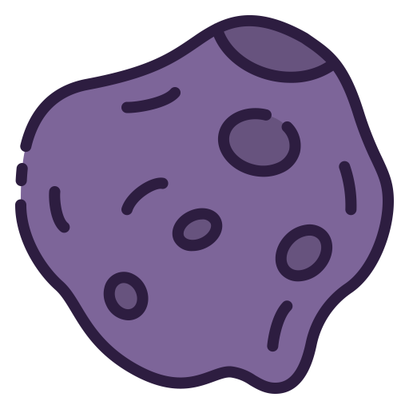

<!DOCTYPE html>
<html lang="en">

    <head>
        <title>asteroids</title>
        <meta name="theme-color" content="#7d6599">
        <meta charset="utf-8">
        <meta
            name="viewport"
            content="width=device-width, initial-scale=1"
        >
        <meta
            name="description"
            content="A Vue.js Progressive Web App with Server Side Rendering and hydratated by REST microservices uses data from The National Aeronautics and Space Administration's application programming interface."
        >
        <link
            rel="icon"
            type="image/x-icon"
            href="/favicon.ico"
        >
        <link
            rel="manifest"
            href="/manifest.webmanifest"
        >
        <link
            rel="apple-touch-icon"
            href="apple-icon-180.png"
        >
        <meta
            name="apple-mobile-web-app-capable"
            content="yes"
        >
        <link
            rel="apple-touch-startup-image"
            href="apple-splash-2048-2732.jpg"
            media="(device-width: 1024px) and (device-height: 1366px) and (-webkit-device-pixel-ratio: 2) and (orientation: portrait)"
        >
        <link
            rel="apple-touch-startup-image"
            href="apple-splash-2732-2048.jpg"
            media="(device-width: 1024px) and (device-height: 1366px) and (-webkit-device-pixel-ratio: 2) and (orientation: landscape)"
        >
        <link
            rel="apple-touch-startup-image"
            href="apple-splash-1668-2388.jpg"
            media="(device-width: 834px) and (device-height: 1194px) and (-webkit-device-pixel-ratio: 2) and (orientation: portrait)"
        >
        <link
            rel="apple-touch-startup-image"
            href="apple-splash-2388-1668.jpg"
            media="(device-width: 834px) and (device-height: 1194px) and (-webkit-device-pixel-ratio: 2) and (orientation: landscape)"
        >
        <link
            rel="apple-touch-startup-image"
            href="apple-splash-1536-2048.jpg"
            media="(device-width: 768px) and (device-height: 1024px) and (-webkit-device-pixel-ratio: 2) and (orientation: portrait)"
        >
        <link
            rel="apple-touch-startup-image"
            href="apple-splash-2048-1536.jpg"
            media="(device-width: 768px) and (device-height: 1024px) and (-webkit-device-pixel-ratio: 2) and (orientation: landscape)"
        >
        <link
            rel="apple-touch-startup-image"
            href="apple-splash-1668-2224.jpg"
            media="(device-width: 834px) and (device-height: 1112px) and (-webkit-device-pixel-ratio: 2) and (orientation: portrait)"
        >
        <link
            rel="apple-touch-startup-image"
            href="apple-splash-2224-1668.jpg"
            media="(device-width: 834px) and (device-height: 1112px) and (-webkit-device-pixel-ratio: 2) and (orientation: landscape)"
        >
        <link
            rel="apple-touch-startup-image"
            href="apple-splash-1620-2160.jpg"
            media="(device-width: 810px) and (device-height: 1080px) and (-webkit-device-pixel-ratio: 2) and (orientation: portrait)"
        >
        <link
            rel="apple-touch-startup-image"
            href="apple-splash-2160-1620.jpg"
            media="(device-width: 810px) and (device-height: 1080px) and (-webkit-device-pixel-ratio: 2) and (orientation: landscape)"
        >
        <link
            rel="apple-touch-startup-image"
            href="apple-splash-1284-2778.jpg"
            media="(device-width: 428px) and (device-height: 926px) and (-webkit-device-pixel-ratio: 3) and (orientation: portrait)"
        >
        <link
            rel="apple-touch-startup-image"
            href="apple-splash-2778-1284.jpg"
            media="(device-width: 428px) and (device-height: 926px) and (-webkit-device-pixel-ratio: 3) and (orientation: landscape)"
        >
        <link
            rel="apple-touch-startup-image"
            href="apple-splash-1170-2532.jpg"
            media="(device-width: 390px) and (device-height: 844px) and (-webkit-device-pixel-ratio: 3) and (orientation: portrait)"
        >
        <link
            rel="apple-touch-startup-image"
            href="apple-splash-2532-1170.jpg"
            media="(device-width: 390px) and (device-height: 844px) and (-webkit-device-pixel-ratio: 3) and (orientation: landscape)"
        >
        <link
            rel="apple-touch-startup-image"
            href="apple-splash-1125-2436.jpg"
            media="(device-width: 375px) and (device-height: 812px) and (-webkit-device-pixel-ratio: 3) and (orientation: portrait)"
        >
        <link
            rel="apple-touch-startup-image"
            href="apple-splash-2436-1125.jpg"
            media="(device-width: 375px) and (device-height: 812px) and (-webkit-device-pixel-ratio: 3) and (orientation: landscape)"
        >
        <link
            rel="apple-touch-startup-image"
            href="apple-splash-1242-2688.jpg"
            media="(device-width: 414px) and (device-height: 896px) and (-webkit-device-pixel-ratio: 3) and (orientation: portrait)"
        >
        <link
            rel="apple-touch-startup-image"
            href="apple-splash-2688-1242.jpg"
            media="(device-width: 414px) and (device-height: 896px) and (-webkit-device-pixel-ratio: 3) and (orientation: landscape)"
        >
        <link
            rel="apple-touch-startup-image"
            href="apple-splash-828-1792.jpg"
            media="(device-width: 414px) and (device-height: 896px) and (-webkit-device-pixel-ratio: 2) and (orientation: portrait)"
        >
        <link
            rel="apple-touch-startup-image"
            href="apple-splash-1792-828.jpg"
            media="(device-width: 414px) and (device-height: 896px) and (-webkit-device-pixel-ratio: 2) and (orientation: landscape)"
        >
        <link
            rel="apple-touch-startup-image"
            href="apple-splash-1242-2208.jpg"
            media="(device-width: 414px) and (device-height: 736px) and (-webkit-device-pixel-ratio: 3) and (orientation: portrait)"
        >
        <link
            rel="apple-touch-startup-image"
            href="apple-splash-2208-1242.jpg"
            media="(device-width: 414px) and (device-height: 736px) and (-webkit-device-pixel-ratio: 3) and (orientation: landscape)"
        >
        <link
            rel="apple-touch-startup-image"
            href="apple-splash-750-1334.jpg"
            media="(device-width: 375px) and (device-height: 667px) and (-webkit-device-pixel-ratio: 2) and (orientation: portrait)"
        >
        <link
            rel="apple-touch-startup-image"
            href="apple-splash-1334-750.jpg"
            media="(device-width: 375px) and (device-height: 667px) and (-webkit-device-pixel-ratio: 2) and (orientation: landscape)"
        >
        <link
            rel="apple-touch-startup-image"
            href="apple-splash-640-1136.jpg"
            media="(device-width: 320px) and (device-height: 568px) and (-webkit-device-pixel-ratio: 2) and (orientation: portrait)"
        >
        <link
            rel="apple-touch-startup-image"
            href="apple-splash-1136-640.jpg"
            media="(device-width: 320px) and (device-height: 568px) and (-webkit-device-pixel-ratio: 2) and (orientation: landscape)"
        >
        <link
            rel="apple-touch-startup-image"
            href="apple-splash-1136-640.jpg"
            media="(device-width: 320px) and (device-height: 568px) and (-webkit-device-pixel-ratio: 2) and (orientation: landscape)"
        >
        <link rel="stylesheet" href="main.css">
    </head>

    <body>
        <div id="app"></div>
    </body>
    <script src="https://cdn.jsdelivr.net/npm/vue@2/dist/vue.js"></script>
    <script type="module"> 
    Vue.filter('formatted', function (date = new Date()) {
  if (!date) return ''
  let month = '' + (date.getMonth() + 1);
  let day = '' + date.getDate();
  let year = date.getFullYear();
  if (month.length < 2) month = '0' + month;
  if (day.length < 2) day = '0' + day;
  return [year, month, day].join('-');
});
Vue.filter('lun_dom_day', function (date = new Date()) {
  return date.getDay() == 0 ? date.getDay() - 1 : 6
});
Vue.filter('scale', function (v = new Number(), min = new Number(), max = new Number()) {
  return (v - min) / (max - min)
});
Vue.filter('min', function (values = new Array()) {
  return Math.min(...values);
});
Vue.filter('max', function (values = new Array()) {
  return Math.max(...values);
});
Vue.filter('DateTimeFormat', function (v = new Date()) {
  return new Intl.DateTimeFormat('it-IT').format(v);
});
    Vue.component('loader', {
        template: `<svg version="1.1" 
        class="loader" 
        xmlns="http://www.w3.org/2000/svg" 
        xmlns:xlink="http://www.w3.org/1999/xlink" 
        x="0px" 
        y="0px"
        viewBox="0 0 80 80" 
        xml:space="preserve"
        width="32"
        height="32"
        >
        <path
            id="spinner" 
            fill="#D43B11" 
            d="M40,72C22.4,72,8,57.6,8,40C8,22.4,
            22.4,8,40,8c17.6,0,32,14.4,32,32c0,1.1-0.9,2-2,2
            s-2-0.9-2-2c0-15.4-12.6-28-28-28S12,24.6,12,40s12.6,
            28,28,28c1.1,0,2,0.9,2,2S41.1,72,40,72z"
        >
            <animateTransform
                attributeType="xml"
                attributeName="transform"
                type="rotate"
                from="0 40 40"
                to="360 40 40"
                dur="0.6s"
                repeatCount="indefinite"
            />
        </path>
    </svg>`
    });
    Vue.component('apod', {
        data: function () {
            const date = new Date();
            return {
                url: undefined,
                date,
                response: {},
                loading: false,
                error: false,
                hdurl: undefined
            }
        },
        mounted() {
            this.fetch();
        },
        methods: {
            fetch() {
                this.loading = true;
                fetch(`https://api.nasa.gov/planetary/apod?api_key=${api_key.value}`)
                .then(response => {
                    this.response = response;
                    return response.json();
                })
                .then(data => {
                    Object.assign(this, data);
                    this.loading = false;
                })
                .catch(error => {
                    this.error = error;
                });
            }
        },
        template: `<section>
        <h2>Astronomy Picture of the Day</h2>
        <loader v-if="loading" class="loading"></loader>
        <div class="error" v-if="error" v-text="error.message"></div>
        <picture v-if="url">
            <source
                media="(min-width:1680px)"
                v-bind:srcset="hdurl"
            >
            <source
                media="(min-width:465px)"
                v-bind:srcset="url"
            >
            
            <figcaption>
                <table>
                    <tbody>
                        <tr>
                            <th>Title</th>
                            <td v-text="title"></td>
                        </tr>
                        <tr>
                            <th>Date</th>
                            <td v-text="date"></td>
                        </tr>
                        <tr>
                            <th>Explanation</th>
                            <td v-text="explanation"></td>
                        </tr>
                    </tbody>
                </table>
            </figcaption>
        </picture>
    </section>`
    });
    Vue.component('scatter-plot', {
  data() {
    return {
      asteroids: [],
      error: {},
      loading: {}
    }
  },
  computed: {
    items: function() {
      const x = 'velocity_kilometers_per_second'
      const y = 'distance'
      const d = 'diameter'
      const scale = Vue.filter('scale')
      const min = Vue.filter('min')
      const max = Vue.filter('max')
      const items = this.asteroids
      return items
        .map((e, i, a) => {
          const elements = a.map((e) => e[x])
          e.x = scale(e[x], min(elements), max(elements))
          return e
        })
        .map((e, i, a) => {
          const elements = a.map((e) => e[y])
          e.y = scale(e[y], min(elements), max(elements))
          return e
        })
        .map((e, i, a) => {
          const elements = a.map((e) => e[d])
          e.d = scale(e[d], min(elements), max(elements))
          return e
        })
    },
  },
  mounted() {
    this.loading = true
    this.error = false;
    const date = new URLSearchParams(location.search).get('date')
    fetch(
      `https://api.nasa.gov/neo/rest/v1/feed?api_key=${new URLSearchParams(
        location.search
      ).get('api_key')}&start_date=${new URLSearchParams(location.search).get(
        'start_date'
      )}&end_date=${new URLSearchParams(location.search).get('end_date')}`
    )
      .then((response) => response.json())
      .then((data) => {
        this.asteroids = data.near_earth_objects[date].map((e) => {
          return {
            id: e.id,
            name: e.name,
            diameter: e.estimated_diameter.kilometers.estimated_diameter_max,
            magnitude: e.absolute_magnitude_h,
            velocity_kilometers_per_hour:
              e.close_approach_data[0].relative_velocity.kilometers_per_hour,
            velocity_kilometers_per_second:
              e.close_approach_data[0].relative_velocity.kilometers_per_second,
            distance: e.close_approach_data[0].miss_distance.astronomical,
          }
        })
      })
      .catch((error) => (this.error = error))
      .finally(() => (this.loading = false))
  },
        template: `<p v-if="error" class="error" v-text="error"></p>
    <div
      v-else-if="loading"
      class="loading"
      style="position:absolute; width:100%; height:100%;"
    ></div>
    <section class="MfPnrltCwM" v-else>
      <asteroid
        v-for="(item, i) in items"
        v-bind:data="{
          ...item,
        }"
        v-bind:key="i"
        style="position: absolute;"
        v-bind:x="item.x"
        v-bind:y="item.y"
        v-bind:d="item.d"
      />
    </section>`
    });
    
    Vue.component('asteroid', {
      props: ['data', 'x', 'y', 'd'],
  data: function() {
    return {
      show: false,
    }
  },
        template: `<div
    class="lHUsmGLhth"
    @mouseover="show = true"
    @mouseleave="show = false"
    :style="{
      top: 100 - x * 100 + '%',
      left: y * 100 + '%',
    }"
  >
    <bubble class="IyTMAxUXOq" :d="d" />
    <tooltip :show="show" :data="data" />
  </div>`
    });
    
    Vue.component('bubble', {
  props: {
    minD: {
      type: Number,
      default: function() {
        return 30
      },
    },
    maxD: {
      type: Number,
      default: function() {
        return 100
      },
    },
    d: {
      type: Number,
      default: function() {
        return 0
      },
    },
  },
  computed: {
    width: function() {
      return this.d * (this.maxD - this.minD) + this.minD
    },
    height: function() {
      return this.d * (this.maxD - this.minD) + this.minD
    },
  },
        template: `<div
    class="bubble"
    :style="{
      width: width + 'px',
      height: height + 'px',
    }"
  >
    <div class="point"></div>
  </div>`
    });
    
    Vue.component('tooltip', {
  props: ['show', 'data'],
        template: `<transition name="slide-fade">
    <div v-if="show" class="tooltip">
      <table>
        <tbody>
          <tr>
            <td>Name</td>
            <td>{{ data.name }}</td>
          </tr>
          <tr>
            <td>Diameter</td>
            <td>{{ data.diameter }} km</td>
          </tr>
          <tr>
            <td>Magnitude</td>
            <td>{{ data.magnitude }} h</td>
          </tr>
          <tr>
            <td>Distance</td>
            <td>{{ data.distance }} au</td>
          </tr>
          <tr>
            <td>Velocity</td>
            <td>{{ data.velocity_kilometers_per_hour }} km/h</td>
          </tr>
        </tbody>
      </table>
    </div>
  </transition>`
    });
    
    
    
    var app = new Vue({
            el:"#app",
  name: 'app',
  methods: {
    get() {
      const url = new URL('https://api.nasa.gov')
      url.pathname = 'neo/rest/v1/feed'
      url.searchParams.set('start_date', new URLSearchParams(location.search).get("start_date"))
      url.searchParams.set('end_date', new URLSearchParams(location.search).get("end_date"))
      url.searchParams.set('api_key', new URLSearchParams(location.search).get("api_key"))
      this.loading = true
      this.error = undefined
      fetch(url)
        .then((response) => {
          this.response = response
          if (response.status == 200) {
            response.json().then((data) => {
              Object.assign(this, data)
              this.items = data.near_earth_objects[new URLSearchParams(location.search).get("date")]
              this.near_earth_objects = data.near_earth_objects;
              this.loading = false;
            })
          } else if (response.status == 400) {
            response.json().then((data) => {
              this.error = {
                message: data.error_message,
              }
            })
          } else if (response.status == 403) {
            response.json().then((data) => {
              Object.assign(this, data)
            })
          }
        })
        .catch((error) => {
          this.error = error
        });
      fetch("./package.json")
        .then((response) => response.json())
        .then((body) => this.version=body.version)
    },
    onchangedate(date = new Date()) {
      this.date = date
    },
  },
  data: function() {
    return {
      items: new Array(),
      loading: true,
      near_earth_objects: undefined,
      error: undefined,
      element_count: undefined,
      links: undefined,
      version: undefined
    }
  },
  mounted() {
    this.get()
  },
  computed: {
    start_date: ()=>new URLSearchParams(location.search).get("start_date"),
    end_date: ()=>new URLSearchParams(location.search).get("end_date"),
    date: ()=>new URLSearchParams(location.search).get("date"),
    api_key: ()=>new URLSearchParams(location.search).get("api_key")
  },
  template: `<div>
    <header>
      
      <h1>Asteroids</h1>
      <button onclick="history.back()">back</button>
      <button onclick="history.forward()">forward</button>
      <form id="form">
        <fieldset>
          <legend>Legend</legend>
          <label for="api_key">API key</label>
          <input
            type="text"
            id="api_key"
            name="api_key"
            required
            :value="api_key"
          />
          <label for="start_date">start_date</label>
          <input
            type="date"
            :value="start_date"
            name="start_date"
            id="start_date"
            required
          />
          <label for="end_date">end_date</label>
          <input
            type="date"
            :value="end_date"
            name="end_date"
            id="end_date"
          />
        </fieldset>
        <button type="submit">Submit</button>
      </form>
    </header>
    <main>
      <section>
        <h2>Bubble chart</h2>
        <div class="error" v-if="error" v-text="error.message"></div>
        <fieldset
          form="form"
          onchange="this.form.submit()"
          v-if="near_earth_objects"
        >
          <legend>Date</legend>
          <div v-for="(e, i) in Object.keys(near_earth_objects)" :id="e.id">
            <input
              type="radio"
              :id="e"
              name="date"
              :value="e"
              :checked="date == e"
              form="form"
            />
            <label :for="e" v-text="e"></label>
          </div>
        </fieldset>
        <loader v-if="loading" class="loading"></loader>
        
    <scatter-plot/>
        <svg
          class="scatter-plot"
          viewBox="0 0 200 100"
          preserveAspectRatio="xMidYMid meet"
          v-if="items"
          overflow="hidden"
        >
          <line
            x1="0"
            y1="0"
            x2="0"
            y2="100%"
            stroke-width="4"
            stroke="aquamarine"
          />
          <line
            x1="0"
            y1="100%"
            x2="100%"
            y2="100%"
            stroke-width="4"
            stroke="aquamarine"
          />
          <line
            v-for="i in 10"
            :key="'1'+i"
            :x1="i * 10 + '%'"
            y1="0"
            :x2="i * 10 + '%'"
            y2="100%"
            stroke-width="1"
            stroke="aquamarine"
          />
          <line
            v-for="i in 10"
            :key="'2'+i"
            x1="0"
            :y1="i * 10 + '%'"
            x2="100%"
            :y2="i * 10 + '%'"
            stroke-width="1"
            stroke="aquamarine"
          />
          <text
            v-for="i in 10"
            :key="'3'+i"
            x="4"
            :y="100 - i * 10 + '%'"
            text-anchor="start"
            font-size="12px"
            font-weight="bold"
            fill="black"
            writing-mode="horizontal-tb"
          >
            {{ i }}
          </text>
          <text
            v-for="i in 10"
            :key="'4'+i"
            :x="i * 10 + '%'"
            y="96"
            text-anchor="end"
            font-size="12px"
            font-weight="bold"
            fill="black"
            writing-mode="vertical-lr"
          >
            {{ i }}
          </text>
          <circle
            v-for="(item, i) in items"
            :key="'5'+i"
            :cx="
            (100 *
                (items.map(
                  (z) =>
                    z.close_approach_data[0].relative_velocity
                      .kilometers_per_second
                )[i] -
                  Math.min(
                    ...items.map(
                      (z) =>
                        z.close_approach_data[0].relative_velocity
                          .kilometers_per_second
                    )
                  ))) /
                (Math.max(
                  ...items.map(
                    (z) =>
                      z.close_approach_data[0].relative_velocity
                        .kilometers_per_second
                  )
                ) -
                  Math.min(
                    ...items.map(
                      (z) =>
                        z.close_approach_data[0].relative_velocity
                          .kilometers_per_second
                    )
                  ))+'%'
            "
            :cy="
            (100 *
                (items.map(
                  (z) => z.close_approach_data[0].miss_distance.kilometers
                )[i] -
                  Math.min(
                    ...items.map(
                      (z) => z.close_approach_data[0].miss_distance.kilometers
                    )
                  ))) /
                (Math.max(
                  ...items.map(
                    (z) => z.close_approach_data[0].miss_distance.kilometers
                  )
                ) -
                  Math.min(
                    ...items.map(
                      (z) => z.close_approach_data[0].miss_distance.kilometers
                    )
                  ))+'%'
            "
            :r="10"
            class="bubble"
          />
        </svg>
        <table v-if="near_earth_objects">
          <caption>
            Legend
          </caption>
          <thead>
            <tr>
              <td>Direction</td>
              <td>Data</td>
              <td>Unit of measurement</td>
            </tr>
          </thead>
          <tbody>
            <tr>
              <td>⬆</td>
              <td>Distance</td>
              <td>au</td>
            </tr>
            <tr>
              <td>➡</td>
              <td>Velocity</td>
              <td>km/s</td>
            </tr>
            <tr>
              <td>
                <svg
                  width="32"
                  height="32"
                  viewBox="0 0 10 10"
                  preserveAspectRatio="xMidYMid meet"
                >
                  <circle r="5" cx="5" cy="5"></circle>
                </svg>
              </td>
              <td>minimum diameter</td>
              <td>km</td>
            </tr>
            <tr>
              <td>
                <svg
                  width="32"
                  height="32"
                  viewBox="0 0 10 10"
                  preserveAspectRatio="xMidYMid meet"
                >
                  <circle r="5" cx="5" cy="5"></circle>
                </svg>
              </td>
              <td>maximum diameter</td>
              <td>km</td>
            </tr>
          </tbody>
          <tbody>
            <tr>
              <th>start_date</th>
              <td v-text="start_date"></td>
            </tr>
            <tr>
              <th>end_date</th>
              <td v-text="end_date"></td>
            </tr>
            <tr>
              <th>api_key</th>
              <td v-text="api_key"></td>
            </tr>
            <tr>
              <th>date</th>
              <td v-text="date"></td>
            </tr>
          </tbody>
          <tbody v-if="links">
            <tr v-if="element_count">
              <th>Element count</th>
              <td v-text="element_count"></td>
            </tr>
            <tr>
              <th rowspan="4">Links</th>
            </tr>
            <tr>
              <td><a :href="links.next">next</a></td>
            </tr>
            <tr>
              <td><a :href="links.prev">prev</a></td>
            </tr>
            <tr>
              <td><a :href="links.self">self</a></td>
            </tr>
          </tbody>
        </table>
      </section>
      <section>
        <h2>Brightest of the week</h2>
        <loader v-if="loading" class="loading"></loader>
        <div class="error" v-if="error" v-text="error.message"></div>
        <table>
          <tr v-for="(e, k, i) in near_earth_objects" :key="'6'+i">
            <th v-text="k"></th>
            <td v-if="typeof e == 'object'" :key="'7'+i">
              <table>
                <tr v-for="(e, k, i) in e" :id="'8'+k">
                  <th v-text="k"></th>
                  <td v-if="typeof e == 'object'" :key="'9'+i">
                    <table>
                      <tr
                        v-for="(e, k, i) in e"
                        :key="'10'+i"
                      >
                        <th v-text="k"></th>
                        <td v-if="typeof e == 'object'" :key="'11'+i">
                          <table>
                            <tr
                              v-for="(e, k, i) in e"
                              :key="'12'+i"
                            >
                              <th v-text="k"></th>
                              <td v-if="typeof e == 'object'" :key="'13'+i">
                                <table>
                                  <tr
                                    v-for="(e, k, i) in e"
                                    :key="'14'+i"
                                  >
                                    <th v-text="k"></th>
                                    <td
                                      v-if="typeof e == 'object'"
                                      :key="'15'+i"
                                    ></td>
                                    <td v-else :key="'16'+i" v-text="e"></td>
                                  </tr>
                                </table>
                              </td>
                              <td v-else :key="'17'+i" v-text="e"></td>
                            </tr>
                          </table>
                        </td>
                        <td v-else :key="'18'+i" v-text="e"></td>
                      </tr>
                    </table>
                  </td>
                  <td v-else :key="'19'+i" v-text="e"></td>
                </tr>
              </table>
            </td>
            <td v-else :key="'20'+i" v-text="e"></td>
          </tr>
        </table>
      </section>
    </main>
    <aside>
      <apod />
    </aside>
    <footer>
      <table>
        <tbody>
          <tr>
            <th>GitHub</th>
            <td>
              <a href="https://github.com/mattiapontonio/asteroids"
                >asteroids</a
              >
            </td>
          </tr>
          <tr>
            <th>Version</th>
            <td>{{ version }}</td>
          </tr>
          <tr>
            <th>Credits</th>
            <td>
              Icons made by
              <a
                href="https://www.flaticon.com/authors/good-ware"
                title="Good Ware"
                >Good Ware</a
              >
              from
              <a href="https://www.flaticon.com/" title="Flaticon"
                >www.flaticon.com</a
              >
            </td>
          </tr>
        </tbody>
      </table>
    </footer>
  </div>`
})

    
    
    </script>
    <script>
        if ('serviceWorker' in navigator) {
            window.addEventListener('load', function() {
                navigator.serviceWorker.register('/service-worker.js');
            });
        }
    </script>
</html>
